Русский перевод. Неофициальный перевод актуальной документации snnTorch latest (0.9.4). Оригинал: https://snntorch.readthedocs.io/en/latest/. Документация распространяется по лицензии CC BY-SA 3.0.
Учебник 1 - Кодирование спайков
Учебное пособие написано Джейсоном К. Эшрагианом (www.ncg.ucsc.edu)

Серия учебных пособий snnTorch основана на следующей статье. Если вы считаете эти ресурсы или код полезными в своей работе, пожалуйста, укажите следующий источник:
Примечание
- Этот учебник является статической нередактируемой версией. Интерактивные редактируемые версии доступны по следующим ссылкам:
В этом учебном пособии вы узнаете, как использовать snnTorch для:
преобразования наборов данных в спайковые наборы данных,
как их визуализировать,
и как генерировать случайные спайковые последовательности.
Введение
Свет — это то, что мы видим, когда сетчатка преобразует фотоны в спайки. Запахи — это то, что мы чувствуем, когда летучие молекулы преобразуются в спайки. Прикосновение — это то, что мы ощущаем, когда нервные окончания превращают тактильное давление в спайки. Мозг использует универсальную валюту спайк.
Если наша конечная цель — построить спайковую нейронную сеть (SNN), то имеет смысл использовать спайки и на входе. Хотя довольно часто используются неспайковые входы (как будет показано в Учебном пособии 3), часть привлекательности кодирования данных исходит из трёх S: спайки, разреженность и подавление статики.
Спайки: (a-b) Биологические нейроны обрабатывают и общаются посредством спайков, которые представляют собой электрические импульсы амплитудой примерно 100 мВ. (c) Многие вычислительные модели нейронов упрощают этот всплеск напряжения до дискретного однобитового события: «1» или «0». Это гораздо проще представить в аппаратном обеспечении, чем значение с высокой точностью.
Разреженность: (c) Нейроны большую часть времени находятся в состоянии покоя, обнуляя большинство активаций до нуля в любой момент времени. Разреженные векторы/тензоры (с множеством нулей) не только дёшевы в хранении, но и, скажем, если нам нужно умножить разреженные активации на синаптические веса. Если большинство значений умножается на «0», то нам не нужно считывать многие параметры сети из памяти. Это означает, что нейроморфное оборудование может быть чрезвычайно эффективным.
Подавление статики (также известное как обработка, управляемая событиями): (d-e) Сенсорная периферия обрабатывает информацию только тогда, когда есть новая информация для обработки. Каждый пиксель в (e) реагирует на изменения освещённости, поэтому большая часть изображения отсекается. Обычная обработка сигналов требует, чтобы все каналы/пиксели придерживались глобальной частоты дискретизации/затвора, что замедляет частоту считывания. Обработка, управляемая событиями, теперь не только способствует разреженности и энергоэффективности за счёт блокировки неизменяющегося входа, но и часто позволяет достичь гораздо более высокой скорости обработки.
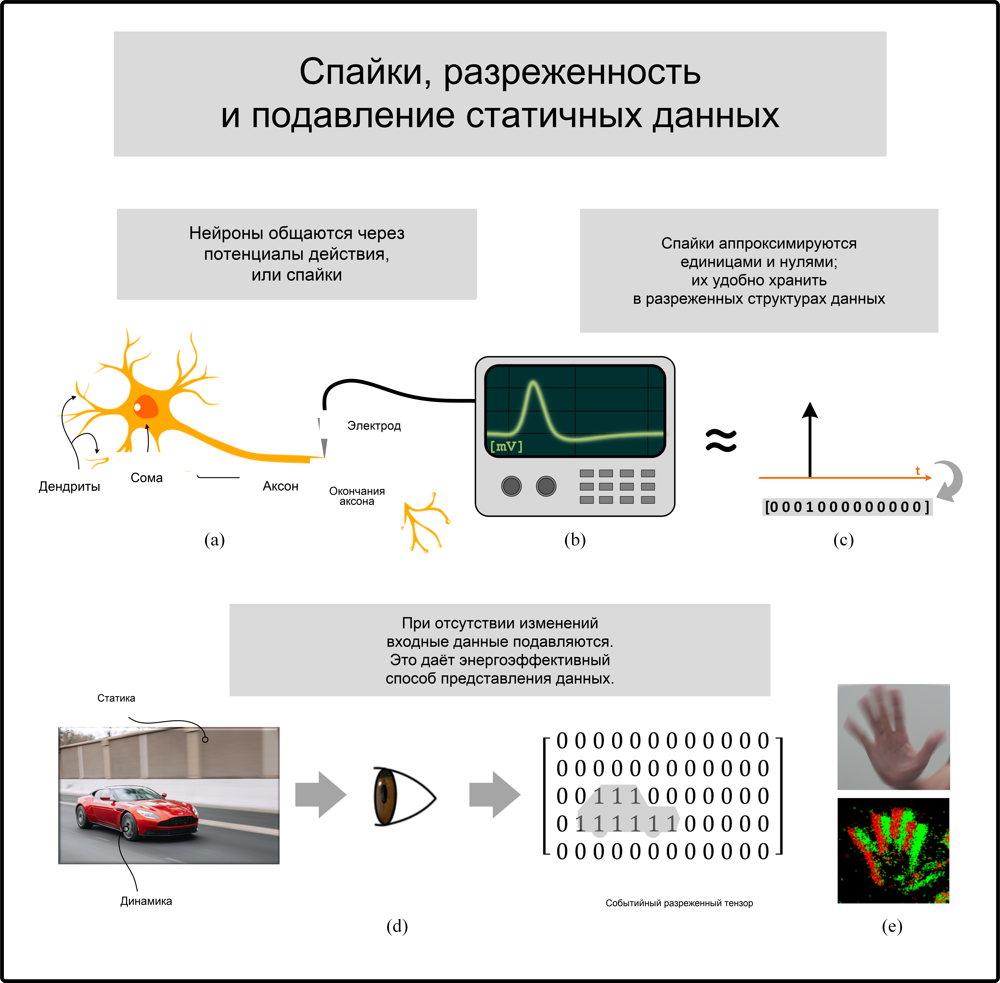
{kind=link}
В этом учебном пособии мы будем считать, что у нас есть некоторые неспайковые входные данные (например, набор данных MNIST), и мы хотим закодировать их в спайки с помощью нескольких различных методов. Итак, давайте начнём!
Установите последнюю версию дистрибутива snnTorch из PyPi:
$ pip install snntorch
1. Настройка набора данных MNIST
1.1. Импорт пакетов и настройка окружения
import snntorch as snn
import torch
# Training Parameters
batch_size=128
data_path='/tmp/data/mnist'
num_classes = 10 # MNIST has 10 output classes
# Torch Variables
dtype = torch.float
1.2 Загрузка набора данных
from torchvision import datasets, transforms
# Define a transform
transform = transforms.Compose([
transforms.Resize((28,28)),
transforms.Grayscale(),
transforms.ToTensor(),
transforms.Normalize((0,), (1,))])
mnist_train = datasets.MNIST(data_path, train=True, download=True, transform=transform)
Если приведённый выше блок кода вызывает ошибку, например, серверы MNIST недоступны, то раскомментируйте следующий код вместо этого.
# # temporary dataloader if MNIST service is unavailable
# !wget www.di.ens.fr/~lelarge/MNIST.tar.gz
# !tar -zxvf MNIST.tar.gz
# mnist_train = datasets.MNIST(root = './', train=True, download=True, transform=transform)
Пока мы не начнём фактически обучать сеть, нам не понадобятся большие наборы данных. snntorch.utils содержит несколько полезных функций для изменения наборов данных. Примените data_subset чтобы уменьшить набор данных на коэффициент, определённый в subset. Например, для subset=10, обучающий набор из 60 000 будет уменьшен до 6 000.
from snntorch import utils
subset = 10
mnist_train = utils.data_subset(mnist_train, subset)
>>> print(f"The size of mnist_train is {len(mnist_train)}")
The size of mnist_train is 6000
1.3 Создание загрузчиков данных
Объекты Dataset, созданные выше, загружают данные в память, а
DataLoader будет подавать их пакетами. DataLoaders в PyTorch — это
удобный интерфейс для передачи данных в сеть. Они возвращают итератор,
разделённый на мини-пакеты размером batch_size.
from torch.utils.data import DataLoader
train_loader = DataLoader(mnist_train, batch_size=batch_size, shuffle=True)
2. Кодирование спайков
Спайковые нейронные сети (SNN) созданы для обработки изменяющихся во времени данных. Однако MNIST не является набором данных, изменяющимся во времени. Есть два варианта использования MNIST с SNN:
Повторно передавать один и тот же обучающий пример \(\mathbf{X}\in\mathbb{R}^{m\times n}\) в сеть на каждом временном шаге. Это похоже на преобразование MNIST в статическое, неизменное видео. Каждый элемент \(\mathbf{X}\) может принимать значение высокой точности, нормализованное от 0 до 1: \(X_{ij}\in [0, 1]\).
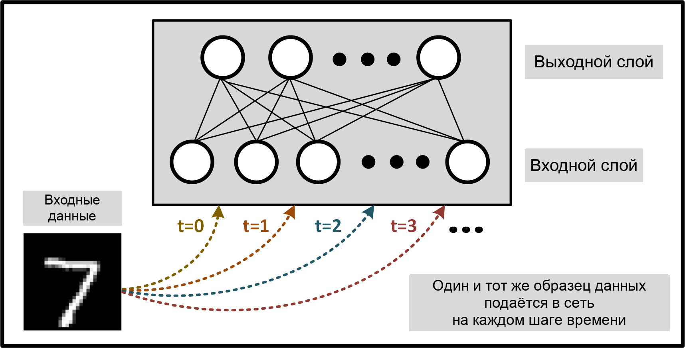
Преобразовать входные данные в последовательность спайков длины
num_steps, где каждый признак/пиксель принимает дискретное значение \(X_{i,j} \in \{0, 1\}\). В этом случае MNIST преобразуется в изменяющуюся во времени последовательность спайков, которая отражает связь с исходным изображением.
{kind=link}
{kind=link}
Первый метод довольно прост и не полностью использует временную динамику SNN. Поэтому давайте подробнее рассмотрим преобразование данных в спайки (кодирование) из пункта (2).
Модуль snntorch.spikegen (т.е. генерация спайков) содержит
ряд функций, упрощающих преобразование данных в спайки.
В настоящее время доступно три варианта спайкового кодирования в
snntorch:
Частотное кодирование: spikegen.rate
Кодирование задержкой: spikegen.latency
Дельта-модуляция: spikegen.delta
В чем разница?
Частотное кодирование использует входные признаки для определения частоты спайков
Кодирование задержкой использует входные признаки для определения времени спайка
Дельта-модуляция использует временное изменение входных признаков для генерации спайков
2.1 Частотное кодирование MNIST
Один из примеров преобразования входных данных в частотный код выглядит следующим образом. Каждый нормализованный входной признак \(X_{ij}\) используется как вероятность того, что событие (спайк) произойдет в любой заданный момент времени, возвращая значение, закодированное частотой \(R_{ij}\). Это можно рассматривать как испытание Бернулли: \(R_{ij}\sim B(n,p)\), где количество испытаний равно \(n=1\), а вероятность успеха (спайка) равна \(p=X_{ij}\). Явно вероятность возникновения спайка равна:
Создайте вектор, заполненный значением ‘0.5’ и закодируйте его с помощью вышеупомянутой техники:
# Temporal Dynamics
num_steps = 10
# create vector filled with 0.5
raw_vector = torch.ones(num_steps)*0.5
# pass each sample through a Bernoulli trial
rate_coded_vector = torch.bernoulli(raw_vector)
>>> print(f"Converted vector: {rate_coded_vector}")
Converted vector: tensor([1., 1., 1., 0., 0., 1., 1., 0., 1., 0.])
>>> print(f"The output is spiking {rate_coded_vector.sum()*100/len(rate_coded_vector):.2f}% of the time.")
The output is spiking 60.00% of the time.
Теперь попробуйте снова, увеличив длину raw_vector:
num_steps = 100
# create vector filled with 0.5
raw_vector = torch.ones(num_steps)*0.5
# pass each sample through a Bernoulli trial
rate_coded_vector = torch.bernoulli(raw_vector)
>>> print(f"The output is spiking {rate_coded_vector.sum()*100/len(rate_coded_vector):.2f}% of the time.")
The output is spiking 48.00% of the time.
По мере того как num_steps\(\rightarrow\infty\), доля спайков
приближается к исходному значению.
Для изображения MNIST эта вероятность спайка соответствует значению пикселя. Белый пиксель соответствует 100% вероятности спайка, а черный пиксель никогда не генерирует спайк. Взгляните на столбец «Частотное кодирование» ниже для лучшего понимания.
{kind=link}
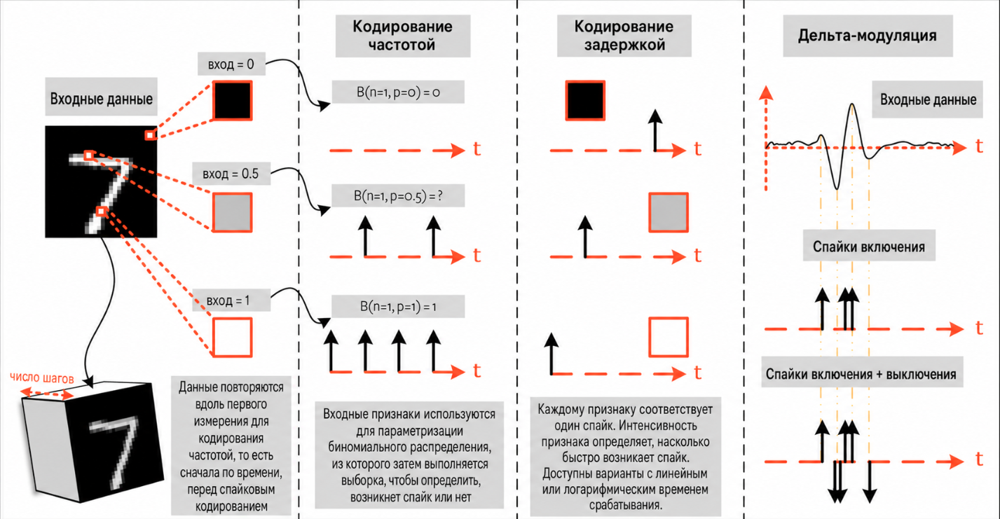
Аналогичным образом, spikegen.rate можно использовать для генерации частотно-закодированного
образца данных. Поскольку каждый образец MNIST — это просто изображение, мы можем использовать
num_steps для повторения его во времени.
from snntorch import spikegen
# Iterate through minibatches
data = iter(train_loader)
data_it, targets_it = next(data)
# Spiking Data
spike_data = spikegen.rate(data_it, num_steps=num_steps)
Если входное значение выходит за пределы \([0,1]\), это больше не представляет вероятность. Такие случаи автоматически обрезаются, чтобы признак представлял вероятность.
Структура входных данных
[num_steps x batch_size x input dimensions]:
>>> print(spike_data.size())
torch.Size([100, 128, 1, 28, 28])
2.2 Визуализация
2.2.1 Анимация
snnTorch содержит модуль snntorch.spikeplot который упрощает процесс визуализации, построения графиков и анимации спайковых нейронов.
import matplotlib.pyplot as plt
import snntorch.spikeplot as splt
from IPython.display import HTML
Чтобы отобразить один образец данных, обратитесь к отдельному образцу из размерности пакета (B)
spike_data, [T x B x 1 x 28 x 28]:
spike_data_sample = spike_data[:, 0, 0]
>>> print(spike_data_sample.size())
torch.Size([100, 28, 28])
spikeplot.animator делает анимацию 2-D данных очень простой. Примечание:
если вы запускаете блокнот локально на своем компьютере, пожалуйста,
раскомментируйте строку ниже и измените путь к вашему ffmpeg.exe
fig, ax = plt.subplots()
anim = splt.animator(spike_data_sample, fig, ax)
# plt.rcParams['animation.ffmpeg_path'] = 'C:\\path\\to\\your\\ffmpeg.exe'
HTML(anim.to_html5_video())
# If you're feeling sentimental, you can save the animation: .gif, .mp4 etc.
anim.save("spike_mnist_test.mp4")
Соответствующую целевую метку можно индексировать следующим образом:
>>> print(f"The corresponding target is: {targets_it[0]}")
The corresponding target is: 7
MNIST содержит изображение в оттенках серого, и белый текст гарантирует 100%
спайков на каждом временном шаге. Давайте повторим это, но уменьшим
частоту спайков. Этого можно добиться, задав аргумент
gain. Здесь мы уменьшим частоту спайков до 25%.
spike_data = spikegen.rate(data_it, num_steps=num_steps, gain=0.25)
spike_data_sample2 = spike_data[:, 0, 0]
fig, ax = plt.subplots()
anim = splt.animator(spike_data_sample2, fig, ax)
HTML(anim.to_html5_video())
# Uncomment for optional save
# anim.save("spike_mnist_test2.mp4")
Теперь усредним спайки по времени и восстановим входные изображения.
plt.figure(facecolor="w")
plt.subplot(1,2,1)
plt.imshow(spike_data_sample.mean(axis=0).reshape((28,-1)).cpu(), cmap='binary')
plt.axis('off')
plt.title('Gain = 1')
plt.subplot(1,2,2)
plt.imshow(spike_data_sample2.mean(axis=0).reshape((28,-1)).cpu(), cmap='binary')
plt.axis('off')
plt.title('Gain = 0.25')
plt.show()
{kind=link}
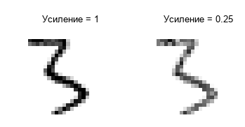
Случай, когда gain=0.25 светлее, чем когда gain=1, так как вероятность спайков была уменьшена в \(\times 4\).
2.2.2 Растровые диаграммы
В качестве альтернативы мы можем сгенерировать растровую диаграмму входного образца. Для этого
необходимо изменить форму образца на 2-D тензор, где 'time' является
первым измерением. Передайте этот образец в функцию
spikeplot.raster.
# Reshape
spike_data_sample2 = spike_data_sample2.reshape((num_steps, -1))
# raster plot
fig = plt.figure(facecolor="w", figsize=(10, 5))
ax = fig.add_subplot(111)
splt.raster(spike_data_sample2, ax, s=1.5, c="black")
plt.title("Input Layer")
plt.xlabel("Time step")
plt.ylabel("Neuron Number")
plt.show()
{kind=link}
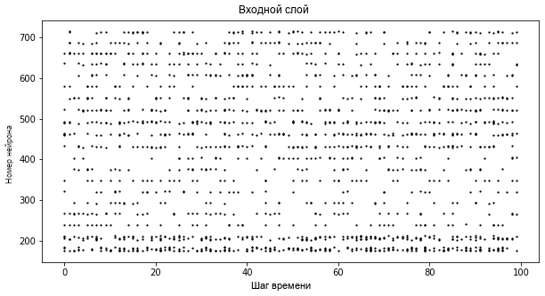
Следующий фрагмент кода показывает, как индексировать один нейрон. В зависимости от входных данных вам может потребоваться попробовать несколько разных нейронов от 0 до 784, прежде чем найти тот, который генерирует спайки.
idx = 210 # index into 210th neuron
fig = plt.figure(facecolor="w", figsize=(8, 1))
ax = fig.add_subplot(111)
splt.raster(spike_data_sample.reshape(num_steps, -1)[:, idx].unsqueeze(1), ax, s=100, c="black", marker="|")
plt.title("Input Neuron")
plt.xlabel("Time step")
plt.yticks([])
plt.show()
{kind=link}
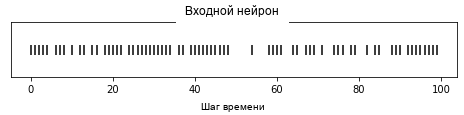
2.2.3 Резюме частотного кодирования
Идея частотного кодирования на самом деле довольно спорна. Хотя мы достаточно уверены, что частотное кодирование происходит на нашей сенсорной периферии, мы не убеждены, что кора головного мозга глобально кодирует информацию в виде частоты спайков. Несколько убедительных причин включают:
Энергопотребление: Природа оптимизирована для эффективности. Для выполнения любой задачи требуется несколько спайков, и каждый спайк потребляет энергию. На самом деле, Работа Ольсхаузена и Филда «Чем занимаются остальные 85% V1?» демонстрирует, что частотное кодирование может объяснить, в лучшем случае, активность 15% нейронов в первичной зрительной коре (V1). Маловероятно, что это единственный механизм в мозге, который одновременно ограничен в ресурсах и высокоэффективен.
Время реакции: Мы знаем, что время реакции человека составляет примерно 250 мс. Если средняя частота разряда нейрона в человеческом мозге составляет порядка 10 Гц, то мы можем обработать только около 2 спайков за время реакции.
Итак, зачем же использовать частотные коды, если они не оптимальны для энергоэффективности или задержки? Даже если наш мозг не обрабатывает данные как частоту, мы достаточно уверены, что наши биологические сенсоры это делают. Недостатки по энергопотреблению/задержке частично компенсируются огромной устойчивостью к шуму: ничего страшного, если некоторые спайки не генерируются, потому что будет еще много других.
Кроме того, вы, возможно, слышали о геббовском принципе «нейроны, которые возбуждаются вместе, соединяются вместе». Если спайков много, это может указывать на интенсивное обучение. В некоторых случаях, когда обучение SNN оказывается сложным, стимулирование более частого возбуждения с помощью частотного кода является одним из возможных решений.
Частотное кодирование почти наверняка работает в сочетании с другими
схемами кодирования в мозге. Мы рассмотрим эти другие механизмы
кодирования в следующих разделах. Это охватывает spikegen.rate функцию.
Дополнительная информация может быть
найдена в документации
здесь.
2.3 Кодирование задержки MNIST
Временные коды захватывают информацию о точном времени возбуждения нейронов; одиночный спайк несет гораздо больше смысла, чем в частотных кодах, которые полагаются на частоту возбуждения. Хотя это повышает восприимчивость к шуму, это также может на порядки уменьшить энергопотребление аппаратного обеспечения, выполняющего SNN-алгоритмы.
spikegen.latency это функция, которая позволяет каждому входу возбуждаться не более один раз за весь временной интервал. Признаки, ближе к 1 будут возбуждаться раньше, а признаки, ближе к 0 будут возбуждаться позже. То есть в нашем случае с MNIST яркие пиксели будут возбуждаться раньше, а темные - позже.
Следующий блок показывает, как это работает. Если вы забыли теорию цепей и/или математика вам ничего не говорит, не волнуйтесь! Важно только то: большой вход означает быстрый спайк; маленький вход означает поздний спайк.
Опционально: Вывод механизма латентного кода
По умолчанию время спайка вычисляется путем рассмотрения входного признака как инжекции тока \(I_{in}\) в RC-цепь. Этот ток перемещает заряд на конденсатор, что увеличивает \(V(t)\)Предполагается, что существует пороговое напряжение, \(V_{thr}\)по достижении которого генерируется спайк. Тогда возникает вопрос: для заданного входного тока (и, соответственно, входного признака), сколько времени требуется для генерации спайка?
Начиная с закона токов Кирхгофа, \(I_{in} = I_R + I_C\)остальной вывод приводит нас к логарифмической зависимости между временем и входом.
{kind=link}
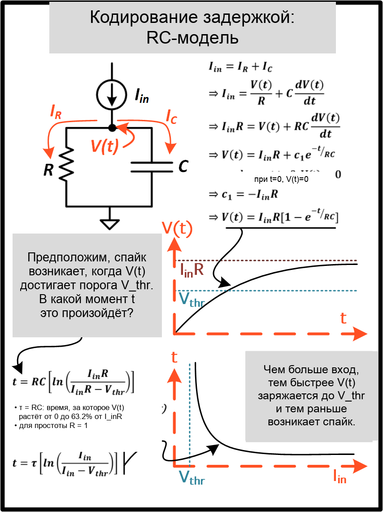
Следующая функция использует приведенный выше результат для преобразования признака интенсивности \(X_{ij}\in [0,1]\) в ответ, закодированный латентностью \(L_{ij}\).
def convert_to_time(data, tau=5, threshold=0.01):
spike_time = tau * torch.log(data / (data - threshold))
return spike_time
Теперь используйте приведенную выше функцию для визуализации взаимосвязи между интенсивностью входного признака и соответствующим временем спайка.
raw_input = torch.arange(0, 5, 0.05) # tensor from 0 to 5
spike_times = convert_to_time(raw_input)
plt.plot(raw_input, spike_times)
plt.xlabel('Input Value')
plt.ylabel('Spike Time (s)')
plt.show()
{kind=link}
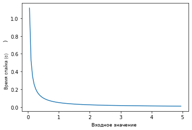
Чем меньше значение, тем позже происходит спайк, с экспоненциальной зависимостью.
Вектор spike_times содержит время, в которое срабатывают спайки, а не разреженный тензор, содержащий сами спайки (единицы и нули).\nПри выполнении симуляции SNN нам нужно представление 1/0, чтобы получить все преимущества использования спайков.\nВесь этот процесс можно автоматизировать с помощью spikegen.latencyгде мы передаем мини-пакет из набора данных MNIST в data_it:
spike_data = spikegen.latency(data_it, num_steps=100, tau=5, threshold=0.01)
Некоторые из аргументов включают:
tau: постоянная времени RC-цепи. По умолчанию входные признаки рассматриваются как постоянный ток, инжектируемый в RC-цепь. Более высокаяtauбудет вызывать более медленное возбуждение.threshold: порог возбуждения мембранного потенциала. Входные значения ниже этого порога не имеют решения в замкнутой форме, так как входной ток недостаточен для подъема мембраны до порога. Все значения ниже порога обрезаются и присваиваются последнему временному шагу.
2.3.1 Растровый график
fig = plt.figure(facecolor="w", figsize=(10, 5))
ax = fig.add_subplot(111)
splt.raster(spike_data[:, 0].view(num_steps, -1), ax, s=25, c="black")
plt.title("Input Layer")
plt.xlabel("Time step")
plt.ylabel("Neuron Number")
plt.show()
# optional save
# fig.savefig('destination_path.png', format='png', dpi=300)
{kind=link}
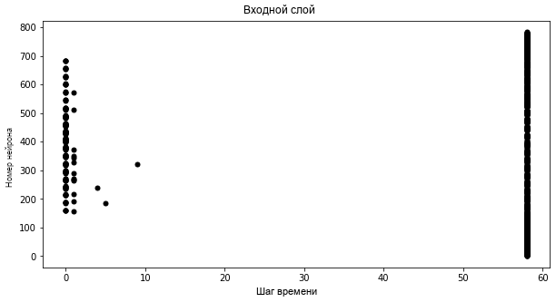
Чтобы понять растровый график, обратите внимание, что признаки высокой интенсивности возбуждаются первыми, тогда как признаки низкой интенсивности возбуждаются последними:
{kind=link}
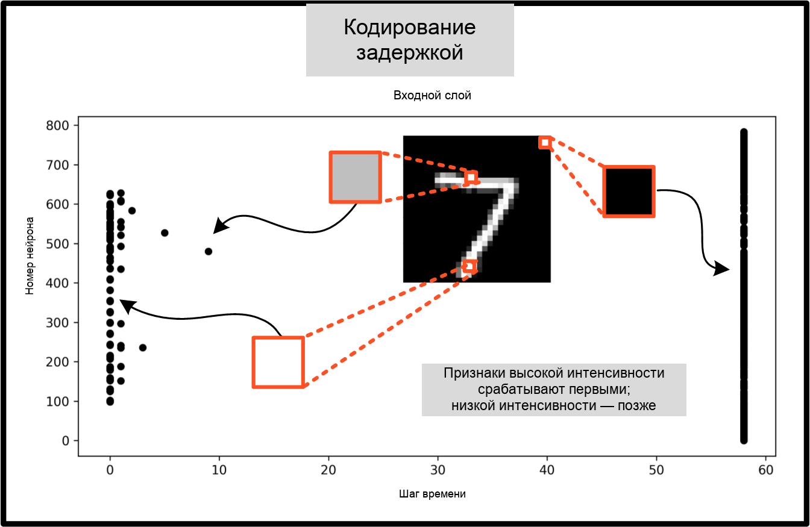
Логарифмический код в сочетании с отсутствием разнообразных входных значений (т.е. отсутствием средних тонов/полутоновых признаков) вызывает значительную кластеризацию в двух областях графика. Яркие пиксели вызывают возбуждение в начале прогона, а темные - в конце. Мы можем увеличить tau чтобы замедлить время спайков, или линеаризовать время спайков, задав необязательный аргумент linear=True.
spike_data = spikegen.latency(data_it, num_steps=100, tau=5, threshold=0.01, linear=True)
fig = plt.figure(facecolor="w", figsize=(10, 5))
ax = fig.add_subplot(111)
splt.raster(spike_data[:, 0].view(num_steps, -1), ax, s=25, c="black")
plt.title("Input Layer")
plt.xlabel("Time step")
plt.ylabel("Neuron Number")
plt.show()
{kind=link}
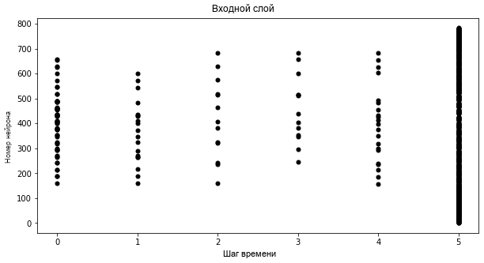
Разброс времени возбуждения теперь распределён гораздо более равномерно. Это достигается за счёт линеаризации логарифмического уравнения по правилам, показанным ниже. В отличие от RC-модели, у этой модели нет физической основы. Она просто проще.
{kind=link}
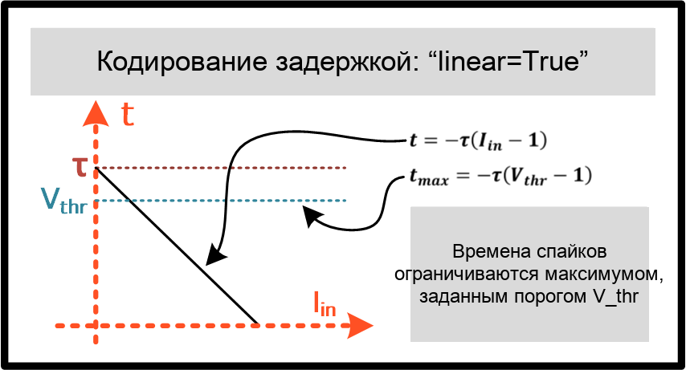
Но обратите внимание, что все возбуждения происходят в пределах первых ~5 временных шагов, тогда как диапазон моделирования составляет 100 шагов. Это указывает на множество избыточных временных шагов, которые ничего не делают. Эту проблему можно решить, либо увеличив tau для замедления постоянной времени, либо задав необязательный аргумент normalize=True для охвата всего диапазона
num_steps.
spike_data = spikegen.latency(data_it, num_steps=100, tau=5, threshold=0.01,
normalize=True, linear=True)
fig = plt.figure(facecolor="w", figsize=(10, 5))
ax = fig.add_subplot(111)
splt.raster(spike_data[:, 0].view(num_steps, -1), ax, s=25, c="black")
plt.title("Input Layer")
plt.xlabel("Time step")
plt.ylabel("Neuron Number")
plt.show()
{kind=link}
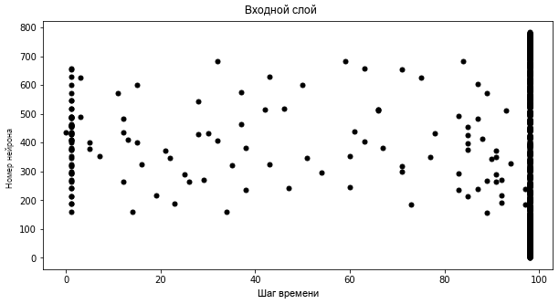
Одно из главных преимуществ кодирования задержками перед частотным кодированием — разреженность. Если нейроны ограничены одним максимальным возбуждением за интересующий временной интервал, это способствует низкому энергопотреблению.
В показанном выше сценарии большинство импульсов происходит на последнем временном шаге, когда входные признаки падают ниже порога. В некотором смысле тёмный фон образца MNIST не несёт полезной информации.
Мы можем удалить эти избыточные признаки, установив clip=True.
spike_data = spikegen.latency(data_it, num_steps=100, tau=5, threshold=0.01,
clip=True, normalize=True, linear=True)
fig = plt.figure(facecolor="w", figsize=(10, 5))
ax = fig.add_subplot(111)
splt.raster(spike_data[:, 0].view(num_steps, -1), ax, s=25, c="black")
plt.title("Input Layer")
plt.xlabel("Time step")
plt.ylabel("Neuron Number")
plt.show()
{kind=link}
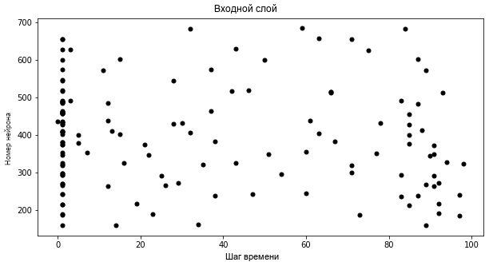
Выглядит гораздо лучше!
2.3.2 Анимация
Мы выполним тот же самый блок кода, что и раньше, для создания анимации.
>>> spike_data_sample = spike_data[:, 0, 0]
>>> print(spike_data_sample.size())
torch.Size([100, 28, 28])
fig, ax = plt.subplots()
anim = splt.animator(spike_data_sample, fig, ax)
HTML(anim.to_html5_video())
Эту анимацию, очевидно, гораздо сложнее разглядеть в видеоформате, но внимательный глаз сможет уловить начальный кадр, где происходит большинство импульсов. Обратитесь к соответствующему целевому значению, чтобы проверить его.
# Save output: .gif, .mp4 etc.
# anim.save("mnist_latency.gif")
>>> print(targets_it[0])
tensor(4, device='cuda:0')
На этом всё для spikegen.latency функции. Дополнительную информацию
можно найти в документации
здесь.
2.4 Дельта-модуляция
Существуют теории, что сетчатка адаптивна: она обрабатывает информацию только тогда, когда появляется что-то новое. Если в поле зрения нет изменений, ваши фоторецепторные клетки менее склонны к возбуждению.
Иными словами: биология основана на событиях. Нейроны процветают на изменениях.
В качестве наглядного примера: несколько исследователей посвятили свою жизнь разработке сенсоров изображения, вдохновлённых сетчаткой, например, Dynamic Vision Sensor. Хотя прикреплённая ссылка ведёт к материалу десятилетней давности, работа в этом видео опережала своё время.
Дельта-модуляция основана на событийно-управляемой импульсной активности. Функция
snntorch.delta принимает на вход временной тензор. Она вычисляет разность между каждым последующим признаком по всем временным шагам. По умолчанию, если разность одновременно является и положительной и больше
порога \(V_{thr}\), генерируется импульс:
{kind=link}
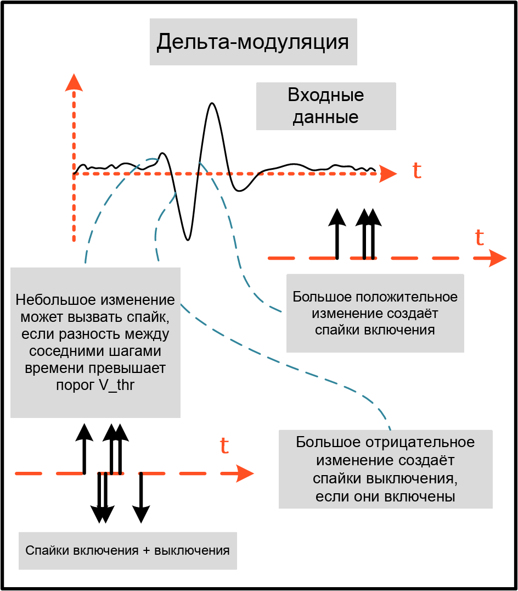
Для иллюстрации давайте сначала придумаем искусственный пример, где мы создадим собственный входной тензор.
# Create a tensor with some fake time-series data
data = torch.Tensor([0, 1, 0, 2, 8, -20, 20, -5, 0, 1, 0])
# Plot the tensor
plt.plot(data)
plt.title("Some fake time-series data")
plt.xlabel("Time step")
plt.ylabel("Voltage (mV)")
plt.show()
{kind=link}
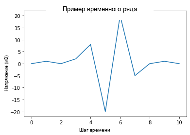
Передайте указанный выше тензор в spikegen.delta функцию, с
произвольно выбранным threshold=4:
# Convert data
spike_data = spikegen.delta(data, threshold=4)
# Create fig, ax
fig = plt.figure(facecolor="w", figsize=(8, 1))
ax = fig.add_subplot(111)
# Raster plot of delta converted data
splt.raster(spike_data, ax, c="black")
plt.title("Input Neuron")
plt.xlabel("Time step")
plt.yticks([])
plt.xlim(0, len(data))
plt.show()
{kind=link}
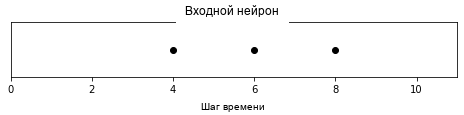
Есть три временных шага, где разность между \(data[T]\) и \(data[T+1]\) больше или равна \(V_{thr}=4\). Это означает, что есть три on-импульса.
Большое падение до \(-20\) не было зафиксировано в наших импульсах. Возможно, нас интересуют и отрицательные колебания, и в этом случае мы можем включить необязательный аргумент off_spike=True.
# Convert data
spike_data = spikegen.delta(data, threshold=4, off_spike=True)
# Create fig, ax
fig = plt.figure(facecolor="w", figsize=(8, 1))
ax = fig.add_subplot(111)
# Raster plot of delta converted data
splt.raster(spike_data, ax, c="black")
plt.title("Input Neuron")
plt.xlabel("Time step")
plt.yticks([])
plt.xlim(0, len(data))
plt.show()
{kind=link}
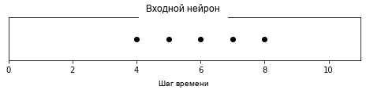
Мы сгенерировали дополнительные импульсы, но это ещё не полная картина!
Вывод тензора покажет наличие «off-импульсов», которые принимают значение -1.
>>> print(spike_data)
tensor([ 0., 0., 0., 0., 1., -1., 1., -1., 1., 0., 0.])
Хотя spikegen.delta была продемонстрирована только на искусственном образце данных,
её истинное применение — сжатие временных рядов путём генерации импульсов только при достаточно больших изменениях/событиях.
На этом завершается описание трех основных функций преобразования спайков! В каждой из трех техник преобразования есть еще дополнительные возможности, которые не были подробно описаны в этом учебном пособии. В частности, мы рассмотрели только кодирование входных данных; мы не рассматривали, как можно кодировать целевые значения и когда это необходимо. Мы рекомендуем обратиться к документации для более глубокого изучения.
3. Генерация спайков (опционально)
А что если у нас вообще нет данных для начала? Скажем, мы просто
хотим сгенерировать случайный спайковый поезд с нуля. Внутри
spikegen.rate является вложенной функцией, rate_conv, которая на самом деле
выполняет этап преобразования спайков.
Все, что нам нужно сделать, это инициализировать случайно сгенерированный torchTensor для
передачи.
# Create a random spike train
spike_prob = torch.rand((num_steps, 28, 28), dtype=dtype) * 0.5
spike_rand = spikegen.rate_conv(spike_prob)
3.1 Анимация
fig, ax = plt.subplots()
anim = splt.animator(spike_rand, fig, ax)
HTML(anim.to_html5_video())
# Save output: .gif, .mp4 etc.
# anim.save("random_spikes.gif")
3.2 Растр
fig = plt.figure(facecolor="w", figsize=(10, 5))
ax = fig.add_subplot(111)
splt.raster(spike_rand[:, 0].view(num_steps, -1), ax, s=25, c="black")
plt.title("Input Layer")
plt.xlabel("Time step")
plt.ylabel("Neuron Number")
plt.show()
{kind=link}
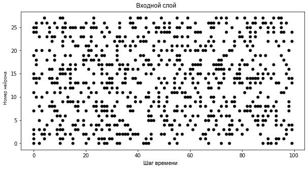
Заключение
На этом все о преобразовании и генерации спайков. Этот подход обобщается за пределы изображений, на одномерные и многомерные тензоры.
Если вам нравится этот проект, пожалуйста, рассмотрите возможность поставить звезду ⭐ репозиторию на GitHub, так как это самый простой и лучший способ поддержать его.
Для справки, документация по spikegen может быть найдена здесь и для spikeplot, здесь.
В следующем учебном пособии, вы узнаете основы спайковых нейронов и как их использовать.